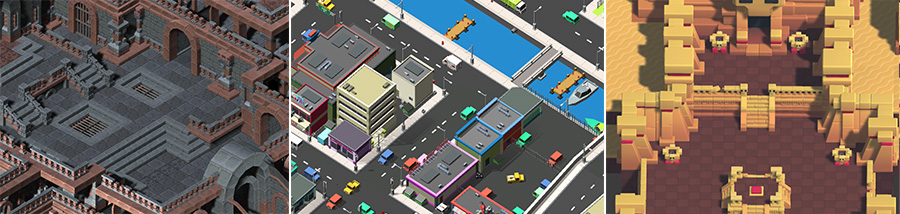

2D or 3D projects
Unity is equally suited to creating both 2D and 3D games. When you create a new project in Unity, you have the choice to start in 2D or 3D mode. You may already know what you want to build, but there are a few subtle points that may affect which mode you choose.
The choice between starting in 2D or 3D mode determines some settings for the Unity Editor, such as whether images are imported as textures or sprites. You can swap between 2D or 3D mode at any time regardless of the mode you set when you created your project (see 2D and 3D Mode Settings). Here are some guidelines which should help you choose.
Full 3D

3D games usually make use of three-dimensional geometry, with Materials and Textures rendered on the surface of GameObjects to make them appear as solid environments, characters and objects that make up your game world. The Camera can move in and around the Scene freely, with light and shadows cast around the world in a realistic way. 3D games usually render the Scene using perspective, so objects appear larger on screen as they get closer to the camera. For all games that fit this description, start in 3D mode.
Orthographic 3D

Sometimes games use 3D geometry, but use an orthographic camera instead of perspective. This is a common technique used in games which give you a bird's-eye view of the action, and is sometimes called "2.5D". If you're making a game like this, you should also use the Editor in 3D mode, because even though there is no perspective, you will still be working with 3D models and Assets. You'll need to switch your Camera and Scene view to Orthographic though.
Scenes above from Synty Studios and BITGEM.
Full 2D

Many 2D games use flat graphics, sometimes called sprites, which have no three-dimensional geometry at all. They are drawn to the screen as flat images, and the game's camera has no perspective. For this type of game, you should start the editor in 2D mode.
2D gameplay with 3D graphics

Some 2D games use 3D geometry for the environment and characters, but restrict the gameplay to two dimensions. For example, the camera may show a side-scrolling view, and the player can only move in two dimensions, but the game itself still uses 3D models for the obstacles and a 3D perspective for the camera. For these games, the 3D effect may serve a stylistic rather than functional purpose. This type of game is also sometimes referred to as "2.5D". Although the gameplay is 2D, you are mostly manipulating 3D models to build the game, so you should start the editor in 3D mode.
2D gameplay and graphics, with a perspective camera

This is another popular style of 2D game, using 2D graphics but with a perspective camera to get a parallax scrolling effect. This is a "cardboard theater"-style scene, where all graphics are flat, but arranged at different distances from the camera. It's most likely that 2D mode will suit your development in this case. However, you should change your Camera's projection mode to Perspective and the Scene view mode to 3D.
Scene above from One Point Six Studio.
Other styles
You may have plans for a project that fits one of the above descriptions, or you may have something else entirely different or unique in mind. Whatever your plans are, hopefully the above will give you an idea of which mode to start the Editor in. Remember, you can switch modes at any time later.
See 2D and 3D Mode Settings to learn more about how to change the 2D/3D mode, and find more detail about how the modes differ.
Useful 2D project information
Whichever type of project you are working in, there are some useful pages to help you get started. There are also many specific pages for 2D features. See the Unity 2D section of the Unity User Manual.